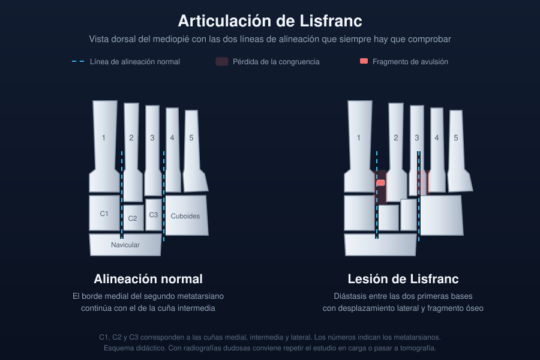

Ficha del catálogo
Lesión de la articulación de Lisfranc
- Sistema
- Óseo
- Modalidad
- RX
- Región
- Pie
- Dificultad
- Avanzado
La lesión de la articulación tarsometatarsiana media se pasa por alto con frecuencia porque los desplazamientos pueden ser mínimos en las radiografías sin carga. Se produce por carga axial sobre el pie en flexión plantar, por caídas o por accidentes de tráfico, y también por torceduras aparentemente banales en el deporte. El ligamento que une el primer cuneiforme con la base del segundo metatarsiano es la pieza que estabiliza todo el arco. Una lesión no tratada evoluciona a colapso del arco medio y artrosis dolorosa.
Técnica
Proyecciones dorsoplantar, oblicua y lateral del pie, idealmente en carga y comparadas con el lado sano. La carga desenmascara diástasis que pasan inadvertidas en decúbito.
Qué observar
- Alineación del borde medial de la base del segundo metatarsiano con el borde medial del segundo cuneiforme
- Diástasis entre las bases del primer y del segundo metatarsiano
- Fragmento óseo pequeño en el espacio entre el primer cuneiforme y la base del segundo metatarsiano
- Alineación del borde medial del cuarto metatarsiano con el borde medial del cuboides en la oblicua
- Pérdida de la alineación dorsal de las bases metatarsianas en la proyección lateral
- Fracturas asociadas de cuneiformes, cuboides o bases metatarsianas
Hallazgos
Pérdida de la alineación tarsometatarsiana con diástasis entre las dos primeras bases metatarsianas y pequeño fragmento avulsionado en el espacio interóseo.
Perlas
El fragmento óseo diminuto entre el primer cuneiforme y la base del segundo metatarsiano equivale a una rotura ligamentaria y basta para indicar inestabilidad. Ante dolor y edema del mediopié con radiografías dudosas conviene repetir el estudio en carga o pasar a tomografía.
Diagnóstico diferencial
- Esguince simple del mediopié
- Alineación conservada en carga y sin fragmentos avulsionados.
- Fractura aislada de la base metatarsiana
- Trazo óseo sin diástasis ni pérdida de alineación articular.
- Artropatía neuropática del mediopié
- Desestructuración progresiva e indolora en paciente diabético.
Simuladores
- Proyección rotada que simula diástasis
- Huesos accesorios del mediopié
- Variante con segundo cuneiforme corto
Por modalidad
- RX
- Primera línea, mejor en carga y comparativa
- TC
- Detecta fracturas ocultas y subluxaciones mínimas
- RM
- Muestra la rotura del ligamento y el edema óseo asociado
Protocolo
Tres proyecciones de pie, con carga si el dolor lo permite. Tomografía o resonancia cuando la sospecha clínica persiste con radiografías normales.
Clasificación
Se describen por el patrón de desplazamiento, con separación de todos los radios en un mismo sentido o divergencia entre el primer radio y los restantes.
Errores frecuentes
- Aceptar radiografías sin carga como suficientes para excluir la lesión
- No buscar el fragmento avulsionado en el espacio interóseo
- Informar únicamente la fractura visible y omitir la alineación tarsometatarsiana

pie lisfranc tarsometatarsiana diastasis mediopie carga lesion oculta